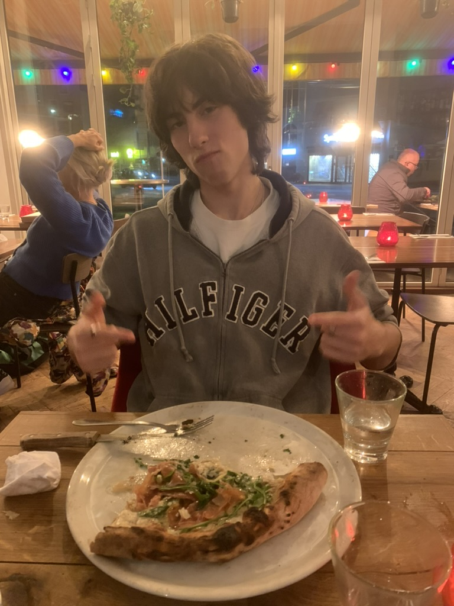
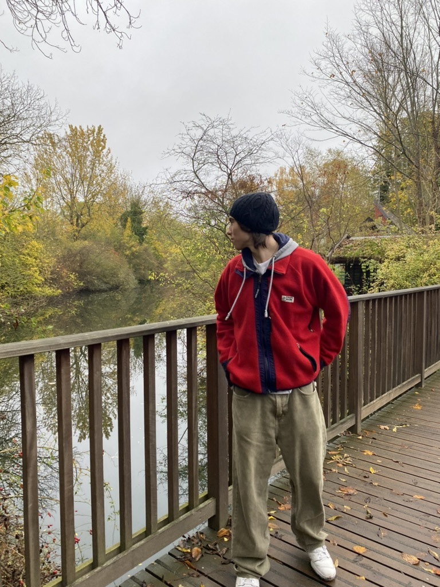

About Me
I'm Connor Sicheri, studying Computer Science and Mathematics at the University of Toronto. I like building performant systems and useful applied ML. I’ve worked on protein design with deep learning, user‑level threading libraries, and custom filesystems.
Research — ML for Protein Engineering
Exploring sequence design and structure prediction workflows; evaluating stability and activity in‑silico.
Systems — Runtimes and Storage
Implemented user‑level threading primitives and a simple filesystem; focused on contention, scheduling and durability.
Life outside code
